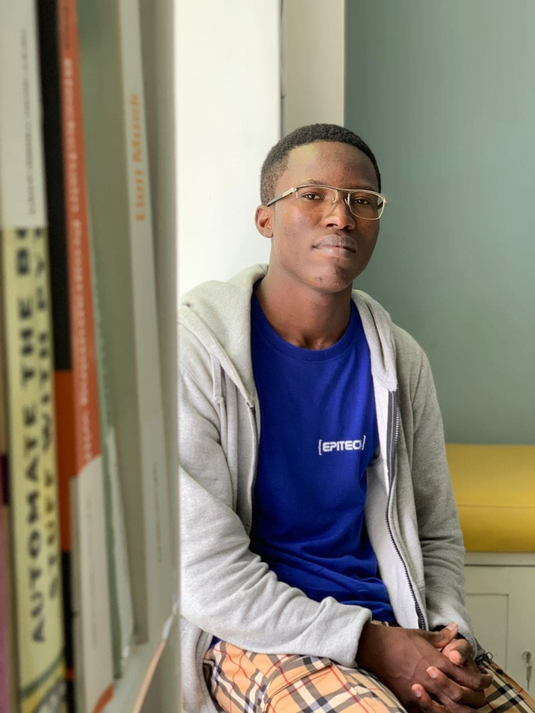

Cotonou, Bénin
Jervis
Bossou
Administrateur systèmes et réseaux
Je fais tourner les parcs informatiques : serveurs Windows et Linux, Active Directory, réseaux, postes de travail. J'automatise ce qui se répète avec Python, Bash et PowerShell, et je garde un œil sur la sécurité.

Parcours
-
Août 2025 – août 2026
Accompagnateur pédagogique AEIG (Epitech Bénin)
- Responsable du module d'administration système
- Coordination de l'équipe d'encadrants et évaluation des projets étudiants
- Conception de supports pédagogiques et animation d'activités
- Installation et préparation des systèmes
-
Oct. 2024 – juil. 2025
Assistant informatique Benin Petro SA
- Gestion du parc informatique et résolution des incidents systèmes et réseaux
- Administration des serveurs Windows, surveillance des réseaux LAN et WAN
- Installation et configuration de Windows, Office et Dynamics NAV
- Automatisation de processus et de tests avec Python et Katalon
-
Sept. 2021 – juil. 2023
Accompagnateur pédagogique AEIG (Epitech Bénin)
- Suivi des projets et accompagnement individuel des étudiants
- Installation des systèmes Windows, Fedora, Ubuntu et Kali
- Création de supports techniques et participation à un tableau de bord Excel de suivi
-
2020, 2 mois
Stagiaire systèmes et réseaux Comtel Technologie
- Installation de systèmes Windows et Linux
- Sertissage et test de câbles RJ45, maintenance de la salle serveur
-
2019, 2 mois
Stagiaire analyste cybersécurité bjCSIRT
- Scripts Python sous Kali Linux et web scraping
- Recherche de vulnérabilités web avec Nessus, Burp Suite, sqlmap et Nikto
Compétences
Systèmes
Windows Server 2016, Windows 10 et 11, Ubuntu, Fedora, Kali. Active Directory, DNS, DHCP.
Réseaux
VLAN, VPN, routage et commutation Cisco (IOS, Packet Tracer). Pare-feu iptables, ufw et Fortinet.
Virtualisation et conteneurs
VMware, VirtualBox, Hyper-V, Docker, Ansible.
Automatisation
Python, Bash, PowerShell, Katalon. Git, GitHub et GitLab.
Sécurité
Wazuh (SIEM), Wireshark, Nmap, Burp Suite, Nessus. Préparation CEH.
Bases de données
MySQL, PostgreSQL, Oracle, MongoDB.
Projets
-
SOC miniature avec Wazuh
Laboratoire de sécurité défensive sur WSL2 : un serveur Wazuh 4.14 (indexer, manager, dashboard) supervise un poste Ubuntu et un poste Windows. Règles personnalisées liées à MITRE ATT&CK (brute-force SSH et Windows, compromission après brute-force, ajout d'un compte administrateur) et bannissement automatique de l'IP attaquante avec iptables, validés par des attaques simulées.
-
NFC Record
Application Android qui lit des cartes NFC (nom, prénoms et autres informations), classe les lectures par jour et exporte la journée choisie en Excel ou en PDF. Elle permet aussi d'écrire des informations sur des cartes NFC vierges.
-
Mes Exos
Application Android d'entraînement scolaire. En français : analyse logique sur 251 phrases, mots de liaison, « que » conjonction ou pronom relatif, orthographe, homophones et accords. En maths : calcul mental, comparaison de nombres et de fractions. Questions tirées au hasard et suivi de la progression.
-
WhoseTurn
Application web pour décider à qui c'est le tour : de 2 à 5 joueurs posent un doigt sur l'écran et, après 4 secondes, l'app en tire un au hasard. Multi-touch, sons générés, vibration et écran maintenu allumé.
-
Writeups de CTF
Mes solutions de défis Root-Me (cryptanalyse, réseau, web client) et picoCTF (forensic), expliquées pas à pas.
-
Projets Epitech
Projets réalisés pendant le Bachelor : algorithmes en C (BSQ, Dante), calcul et chiffrement (103cipher, 104intersection), threads.
-
Automatisation chez Benin Petro
Scripts Python et scénarios Katalon pour automatiser des tâches répétitives et des tests logiciels sur les applications internes.
Formation
-
En cours
Master 2 Systèmes et réseaux ESGIS, Cotonou (cours du soir)
-
2019 – 2021
Bachelor en Technologies de l'information Epitech
Programmation, administration système, DevOps.
Formations complémentaires et langues
- Hacking éthique, préparation CEH (Michel Kartner, Udemy), février 2023
- Anglais niveau B1 (CEBELAE, 2022). Français courant, fon.
Travaillons ensemble
Je cherche un poste d'administrateur systèmes et réseaux. Écrivez-moi, je réponds rapidement.